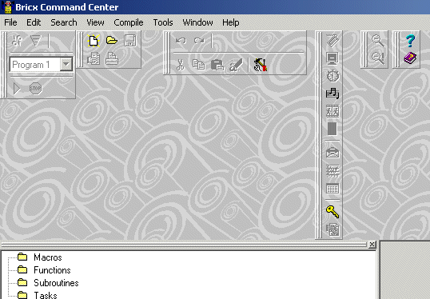

Test integration Virtual RCX in Bricxcc.
In files RCX_link and RCX_term, USBtower replaced by VirtualRCX, with an extra parameter !
(this is ofcourse not the right way to do it, but it was the fastest way to test)
// fSerial := TNQCUsbTower.Create
fserial:=TNQCvirtualRCX.Create(mainform.handle)
In files RCX_link and RCX_term, VRCXserial added to uses clause
uses
// Classes, ExtCtrls, SysUtils, NQCSerial, Windows;
Classes, ExtCtrls, SysUtils, NQCSerial, VRCXserial, Windows;
In files RCX_link and RCX_term, Mainunit added to implementation uses clause
implementation
uses mainunit;
in MainUnit, messagehandler added
public
{ Public declarations }
procedure WndProc(var TheMsg: TMessage); override;
In MainUnit, msg_glob and VRCXserial added to uses clause
,msg_glob
,VRCXserial
In RCX_link, TRCXlink
public
//moved from protected to public
property NQCSerial : TNQCSerial read GetNQCSerial;
changes to "download" a freshly compiled file
In Editor, uses clause in implementation
//added
uses
....
VRCXserial;
In Editor, GetCompilerCommandLine
//replaced: if bDownload then commandstr := commandstr + ' -d ' + GetPortParam;
//by
if bDownload and (pos('usb',lowercase(GetPortParam))=0) then
commandstr := commandstr + ' -d ' + GetPortParam;
In Editor, CompileIt
//added
var dl_file :textfile;
//in the finally statement after the compilation
finally
FakeRCX.Open;
//added
if not(execerror) and (pos('usb',lowercase(GetPortParam))>0) then
begin
assignfile(dl_file,extractfilepath(application.exename)+'download.txt');
rewrite(dl_file);
writeln(dl_file,changefileext(EdFrm.Filename,'.rcx'));
closefile(dl_file);
TNQCVirtualRCX(fakeRCX.Link.NQCSerial).Tell_Master_new_compiled_file_available;
end;
Joystick problems (not solved)
The yoystick right mouse clicks, seems to work ok.
The left mouseclicks sometimes work, sometimes not. The cause of
this problem seems to be the (sometimes) slow reaction of the
VRCX, in which case Bricxcc seems to think that there's no connection
to the VRCX.
Bug report 1: when no tower connected, the mainform will fill the whole screen
- the program is set to find the brick at startup
- there's no tower connected
- so on "where is the brick" you select a port and click CANCEL
- there were no files open
- now from the file menu open a file
- the mainform will fill the whole screen now
Bug report 2:

BUG report 3
Diagnostic window, set display to a var doesn't work,
probably after the set display command ($33) a ViewSourceValue ($E5) should be sent ??
BUG report 4
When compiling a program, when no tower is connected, and there is a
syntax error, Bricxcc starts with the error message that there's no
tower connected and then jumps to the error, quiet annoying.
Suggestion 1
In the diagnostic window display the rom/ram version number in normal notation
I did this in the following way, but maybe it can be done more in the core of the program
procedure TDiagForm.RefreshBtnClick(Sender: TObject);
// Version.Caption := Format('%8.8x/%8.8x', [rom, ram]);
Version.caption:= inttostr((rom and $0F000000) shr 24)+
inttostr((rom and $000F0000) shr 16)+'.'+
inttostr((rom and $00000F00) shr 8)+
inttostr((rom and $0000000F))+
' / '+
inttostr((ram and $0F000000) shr 24)+
inttostr((ram and $000F0000) shr 16)+'.'+
inttostr((ram and $00000F00) shr 8)+
inttostr((ram and $0000000F));
Suggestion 2
In the diagnostic window, display the time with all the 4 numbers, i.e. "00:03", in stead of "0:3"